Page 1 / 原始页码 117
第 7 章 细胞间的相互作用

图 7.1 柿树细胞相互紧密接触 这些植物细胞以及所有细胞，无论它们有什么功能，都与它们的环境相互作用，包括它们周围的细胞。
你知道吗？你体内 100 万亿个细胞中，每一个细胞都与老虎、大黄蜂和柿树的细胞有一个很重要的共同特性（图 7.1），这一特征是大部分细菌和原生生物所不具备的。你体内的细胞相互接触、相互联系、传递各种化学信号并协调它们的行为，使你的身体作为一个整体发挥功能，而不是一大堆各自独立发挥作用的细胞。细胞相互通讯的能力是多细胞生物的特征。本章将详细地探讨多细胞生物的细胞是怎样相互作用的，先来研究细胞怎样通过化学物质相互传递信号，然后考察细胞表面是如何以何种方式相互作用从而形成组织和身体结构的。
Page 2 / 原始页码 118
7.1 细胞利用化学物质相互传递信号
7.1.1 受体蛋白和细胞间的信号传递
在自然界里，细胞间的通讯很普遍。细胞间的信号传递发生在所有多细胞生物里，是细胞相互影响的不可缺少的机制。多细胞生物的细胞利用各种分子作为信号，不仅有肽，还有大型蛋白质、单个氨基酸、核苷酸、类固醇和其他脂类。
即使是可溶性的气体也可以作为信号。一氧化氮 (NO) 对促进雄性性器官的勃起有很重要的作用，伟哥 (Viagra) 即通过刺激 NO 的释放而起作用。
这些分子有的会黏附在信号细胞的表面，有的会通过质膜分泌出来或通过胞吐作用释放出来。
1) 细胞表面的受体
多细胞生物中任何一个细胞都不断与信号流接触。在任何时候，细胞周围的环境里可能会有几百个化学信号，而每个细胞只会对若干个信号作出反应而忽略其他的信号（图 7.2），这就像一个人只与嘈杂房间里的两个人对话那样。那么，细胞怎样“选择”信号来作出反应呢？受体蛋白 (receptor protein) 位于细胞表面或里面，每个受体蛋白的三维形状只适合于一种特定信号分子。当一个信号分子接近一个形状合适的受体蛋白时，两者就会结合在一起，这种结合引导了受体蛋白的形状变化，最后在细胞内产生反应。因此，一个给定的细胞只对适合于它所拥有的一组特定受体蛋白的信号分子作出反应，而忽略了那些缺少对应受体的信号分子。
2) 寻找受体蛋白
受体蛋白在细胞里十分罕见，因此鉴定受体蛋白有很大的技术上的困难。因为这些蛋白质只占细胞内蛋白质量总量的 0.01% 以下，所以要提纯它们，就像在沙丘里找一粒特殊的砂子。然而，最近有两项技术可以让细胞生物学家在这个领域取得很大的进展。
(1) 单克隆抗体 (monoclonal antibody)：第一个方法是利用单克隆抗体。抗体是免疫系的蛋白，它就像一个受体那样特异地与另外一个分子结合。每个单独的免疫细胞都只可以制造一种特定抗体，这种抗体也只可以与一种特定的目标分子结合，因此由单个免疫细胞（1个克隆）只制造一种特定的抗体（单克隆抗体）。单克隆抗体因能够特异结合特定的受体蛋白，故可以用于从细胞里成千上万的蛋白质中分离该受体蛋白。
(2) 基因分析 (gene analysis)：对突变的研究和基因序列的分析，对受体分析工作有很大的影响。在第 19 章，我们会详细说明这项工作如何进行，这些进展使我们有可能确认和分离编码各种受体蛋白的基因。
值得注意的是，这些技术揭示了大量的受体蛋白可以分成少数的几个“家族”，每个“家族”里包含了很多相互关联的受体。在本章的后面部分将会遇到这些受体家族里的一些成员。
7.1.2 细胞信号传递的类型
细胞通过 4 种基本机制来联系，至于究竟用哪一种，首先取决于产生信号的细胞与反应细胞间的距离（图 7.3）。除了这 4 种基本机制外，某些细胞还会给自己发信号，它们分泌的信号与自身质膜上特定的受体结合，这个过程称为自分泌信号传递 (autocrine signaling)。人们认为，该过程对于增强发育过程中的变化起重要作用。
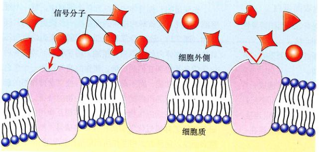
图 7.2 细胞表面的受体只辨认特定的分子 信号分子只结合附于有合适形状的受体上。
Page 3 / 原始页码 119
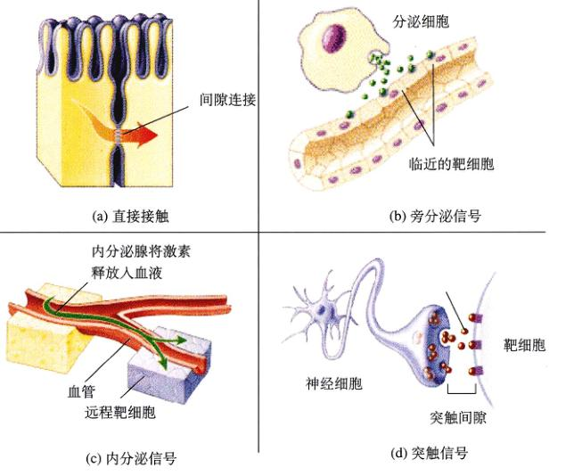
图 7.3 4种细胞信号传递的方法 细胞通过几个方法来相互联系。
(a) 直接接触的两个细胞发出的信号穿过间隙连接。
(b) 在旁分泌信号传递中，一个细胞的分泌物只影响相邻区域的一些细胞。
(c) 在内分泌信号传递中，激素被释放到循环系统里，并被带到靶细胞。
(d) 化学突触信号传递机制涉及到称为神经递质的信号分子传递，它从神经细胞经过突触间隙传到靶细胞。
1) 直接接触
正如我们在第6章所看到的，真核细胞的表面是一层蛋白质、糖类和脂。它们黏附在质膜上向外延伸，当细胞非常靠近时，两个细胞质膜上的一些分子将以某种特定的方式结合在一起。在早期发育中，细胞间很重要的相互作用是通过细胞表面的直接接触来实现的（图 7.3a）。我们将在这个章后面几节更详细地讨论接触依赖性的相互作用。
2) 旁分泌信号传递
细胞释放的信号分子通过细胞外液扩散撤到其他细胞去，如果这些分子被相邻的细胞吸收或被细胞外的酶破坏掉，或由其他方法从细胞外液里很快去除，那么它们的作用只限于距离释放信号分子细胞最近的一些细胞。只有一些短暂而局域性影响的信号称为旁分泌信号 (paracrine signaling)（图 7.3b），类似于直接接触，旁分泌信号传递对早期发育很重要，它能协调一团相邻细胞的活动。
3) 内分泌信号传递
如果一个已释放的信号分子留在细胞外液里，它将可能进入生物体的循环系统，游遍整个身体。这些长寿命的信号分子，可以对距离释放它们的细胞很远的细胞起作用，它们称为激素 (hormone)，这种细胞间的相互联系称为内分泌信号传递 (endocrine signaling)（图 7.3c）。第 58 章对内分泌信号传递做了详细的讨论。动物和植物都广泛地使用了这种信号传递的机制。
4) 突触信号传递
在动物中，神经系统的细胞可以与很远的细胞进行快速地联系。它们的信号分子，即神经递质 (neurotransmitters)，不会像激素那样通过循环系统来传到远距离的细胞，而是依靠神经细胞长的纤维状突起，从其尖端向非常靠近的靶细胞释放神经递质（图 7.3d），两个细胞间那条狭窄的缝隙称为化学突触 (chemical synapse)。旁分泌信号通过细胞间液体运动，而神经递质是穿过突触来传递，而且只持续很短的时间。我们将要在第 54 章对突触信号传递作更充分的叙述。
Page 4 / 原始页码 120
7.2 细胞内和细胞表面的蛋白质接收从其他细胞发来的信号
7.2.1 胞内受体
所有细胞传递信号的途径有一些共同的要素，包括从一个细胞传到另一个细胞的化学信号，以及一个在靶细胞里或者其表面的接受信号的受体。我们已经看过一个细胞传到另一个细胞的信号种类了，现在来看看接受信号的受体的性质。表 7.1 总结了将在本章讨论的几种受体。
很多细胞的信号是脂溶性的或是小分子，它们很容易地通过靶细胞质膜而进入细胞，在那里与受体结合。
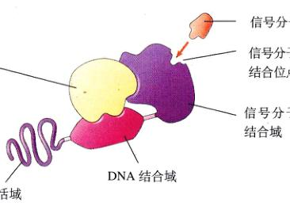
图 7.4 一个起基因调控作用的胞内受体基本结构 这些受体位于细胞内，在接受如类固醇激素、维生素 D 和甲状腺素等信号后发挥作用。
表 7.1 细胞联系的机制
| 机 制 |
结 构 |
功 能 |
例 子 |
| 胞内受体 |
没有细胞外的信号结合点 |
从脂溶性或不带电的非极性的小分子接受信号 |
NO、类固醇激素、维生素 D 和甲状腺素的受体 |
| 细胞表面的受体 |
| 用化学方法开关的离子通道 |
多次跨膜的蛋白质形成一个中心孔 |
由化学方法启动的分子门打开或关闭 |
神经元 |
| 酶受体 |
单次跨膜的蛋白质 |
在细胞外与信号结合，在细胞内催化反应 |
激酶的磷酸化 |
| G 蛋白偶联受体 |
跨膜 7 次的蛋白质在细胞质一边有 G 蛋白的结合点 |
信号与受体的结合导致 GTP 和 G 蛋白结合。附有 GTP 的 G 蛋白与受体分离，把信号传入细胞内 |
肽类激素，眼睛里的视杆细胞 |
| 与其他细胞的物理接触 |
| 表面标记 |
易变的，膜内在蛋白或细胞膜内的糖脂 |
细胞的确认 |
MHC (主要组织相容性复合体)、血型、抗体 |
| 紧密连接 |
紧密结合的密闭纤维蛋白带围绕着细胞 |
把细胞“焊接”在一起以至物质只能从细胞内，而不能在细胞间穿过。 |
消化道上皮细胞间的连接 |
| 桥粒 |
细胞骨架的中间丝通过钙黏着蛋白与邻近细胞连接 |
锚定连接：把细胞“扣”在一起 |
上皮 |
| 黏着连接 |
跨膜的纤维蛋白 |
锚定连接：将细胞外基质固着于细胞骨架 |
承受强机械压力的组织，如皮肤 |
| 间隙连接 |
6 个跨膜的连结子蛋白形成一个连接细胞的管道 |
通讯连接：在组织里，允许小分子从一个细胞传到另一个细胞 |
可兴奋组织，如心肌 |
| 胞间连丝 |
通过相邻植物细胞胞壁间隙的细胞质连接 |
植物细胞的通讯连接 |
植物组织 |
Page 5 / 原始页码 121
有的信号分子与位于细胞质里的蛋白受体结合，有的会穿过核被膜与细胞核里的受体结合。这胞内受体 (intracellular receptor)（图 7.4）可以启动细胞内多种反应，这取决于受体的性质。
1) 作为基因调控者的受体
一些胞内受体作为基因转录的调控者，有皮质醇、雌性激素和孕酮等类固醇激素的受体，也有一些如维生素 D 和甲状腺素等小的脂溶性信号分子受体。所有这些受体有相似的结构，其编码基因很可能都是从同一个祖先基因演化而来。因为结构的相似性，所以它们都属于胞内受体超家族。
每个此类受体都有一个 DNA 的结合位点。在不活跃的状态下，因为一个抑制蛋白占据了结合点，所以受体一般不能与 DNA 结合。当信号分子与受体另一个结合位点结合后，抑制剂释放出来，DNA 的结合位点暴露出来（图 7.5），受体与 DNA 上一段特殊的核苷酸序列结合，从而活化（在一些情况下是抑制）一个特定的基因，这个基因一般位于调节部位的附近。
由胞内受体识别的脂溶性信号分子，比水溶性信号在血液中保留的时间长得多。大部分水溶性激素在几分钟内就被破坏了，而神经递质只有几秒甚至几毫秒的保留时间；另一方面，类固醇激素，如皮质醇和雌性激素可以保留几个小时。
靶细胞对脂溶性细胞信号的反应差异很大，这取决于细胞的性质。即使不同的靶细胞有相同的胞内受体，它们的反应也可以不一样，这由于两个原因：第一，目标 DNA 上的受体结合位点会因细胞类型的不同而不同，所以当信号分子的受体复合物与 DNA 结合后，受影响的基因也会不同；第二，大部分真核生物的基因有很复杂的调控机制。我们将要在第 16 章对它们作详细的讨论，目前只要知道，读取真核生物的基因通常涉及到几种不同的调节蛋白即可。因此，在不同的组织里，胞内受体与不同的信号相互作用。因为不同组织里存在细胞特异性的调控，所以胞内受体与 DNA 结合时其效果也不同。
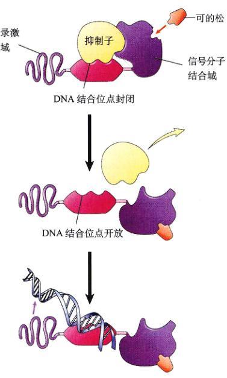
图 7.5 胞内受体是怎样调节基因转录的 在这个模型里，类固醇激素皮质醇与一个 DNA 调节蛋白结合，使其改变形状，抑制物被释放出来，调节蛋白上的 DNA 结合位点也就暴露了。DNA 结合在这个位点上，使一段特定的核苷酸序列置于受体中激活转录作用的结构域上，从而启动转录作用。
2) 作为酶的受体
某些胞内受体发挥了酶的作用，例如信号分子一氧化氮 (NO) 的受体。作为一种小的气体分子，NO 很容易就可以从产生的细胞里扩散出来，并直接进入邻近细胞与鸟苷酸环化酶结合。NO 的结合激活了酶，使它能催化环状鸟苷单磷酸 (cGMP) 的合成，而 cGMP 是一种细胞内的信使分子，可以产生细胞的特异反应，如平滑肌细胞的松弛。
直到最近，人们才认识到 NO 是脊椎动物的一种信使分子，而且它的广泛作用已经得到证明。例如，当脊椎动物的大脑发送一个神经信号来松弛血管壁的平滑肌时，由平滑肌附近的神经释放的信号分子乙酰胆碱，不会直接与平滑肌细胞作用，而是导致附近的表皮细胞产生 NO，由它来使平滑肌松弛，使血管扩张来增强血液流动。
7.2.2 细胞表面受体
大部分信号分子都是水溶性的，包括神经递质、肽类激素和很多作为多细胞生物在发育期间使用的“生长因子”蛋白质。水溶性的信号不能通过扩散作用穿过细胞膜，因此为了启动细胞内的反应，它们必须与细胞表面的受体蛋白结合。这些细胞表面受体 (图 7.6) 对信号分子的结合作出反应，产生一个细胞质内的变化，从而将细胞外的信号转变成细胞内的信号。大部分细胞的受体都是细胞表面受体 (cell surface receptors)，它们几乎全部属于 3 个受体超家族之一：化学门控离子通道、酶受体和 G 蛋白偶联受体。
Page 6 / 原始页码 122
1) 化学门控离子通道
化学门控离子通道 (chemically gated ion channel) 是能让离子通过的受体蛋白形成的，神经递质结合的受体蛋白有相同的基本结构 (图 7.6a)。每个这样的受体蛋白都是“多次穿透膜”的跨膜蛋白，即它们氨基酸链来回穿过质膜几次，这些穿透膜的中心是一个连接细胞外液和细胞质的孔，因为这个孔大得足以让离子通过，所以这些蛋白作为离子通道 (ion channel) 发挥作用。因为当化学物质（神经递质）与通道结合时，通道就会打开，所以通道是化学门控的。当一个化学门控离子通道打开时，流过膜的离子种类，例如是钠离子、钾离子、钙离子还是氯离子，由通道特定的三维结构决定。
2) 酶受体
很多细胞表面受体充当了酶或直接与酶相连 (图 7.6b)。当信号分子与这种受体结合时，酶被激活。在大部分情况下，这些酶是可以把磷酸基团加在蛋白质上的蛋白激酶 (protein kinase)。大部分酶受体有相同的结构：它们是单次穿过的跨膜蛋白（氨基酸链只穿过质膜一次），与信号分子结合的部分位于细胞外，而具有酶活性的部分暴露在细胞质里。
3) G 蛋白偶联受体
第三类细胞表面受体在辅助蛋白的帮助下，间接作用于质膜里的酶或离子通道，这种辅助蛋白称为三磷酸鸟苷 (GTP) 结合蛋白，或 G 蛋白 (G protein) (图 7.6c)。这种类型的受体，利用 G 蛋白介导信号从膜表面进入细胞内部。
(1) G 蛋白偶联受体是如何工作的：G 蛋白是启动细胞质内可扩散信号的中介，它们在细胞表面的受体和细胞质内的信号路径间形成了短暂的连接。重要的是：这个信号只有相对很短的寿命，它的活跃期是由 GTP 决定的。在一个信号到达之前，G 蛋白附着在 G 蛋白偶联受体位于细胞质的一侧，一旦信号分子与受体结合，G 蛋白偶联受体就会改变形状，改变形状后的受体使 G 蛋白扭曲，导致它与 GTP 结合，于是 G 蛋白可以扩散离开受体，然后，被激活了的 G 蛋白与 GTP 的复合物就可以启动一系列的反应。
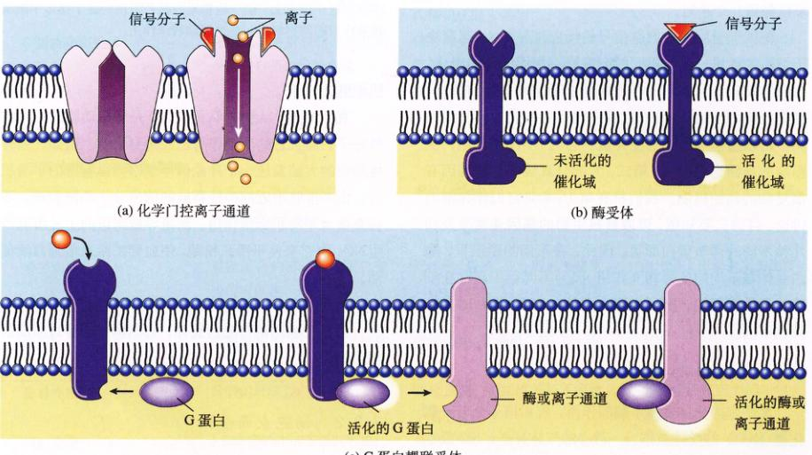
图 7.6 细胞表面受体 (a) 化学门控离子通道是多次穿透膜的跨膜蛋白。它在细胞膜上形成一个孔，孔的开关由化学信号控制。(b) 酶受体是单次通过膜的跨膜蛋白。它在细胞外表面与信号结合，然后其细胞质内的催化区激活细胞内的活性。(c) G 蛋白偶联受体与细胞外的信号和细胞内的 G 蛋白都结合，然后 G 蛋白激活一个酶或一个离子通道，它们介导信号从细胞表面传到细胞的内部。
Page 7 / 原始页码 123
然而，因为 GTP 的存在时间很短（几秒至几分钟），这种活性是短暂的。这种巧妙的安排，使 G 蛋白可以激活大量路径，但是只能是短暂的。为了保持一个路径，必须有连续不断的信号传人，当外部信号的速度降低时，路径就会关闭。
(2) 最大的表面受体家族：科学家已经确认了 100 多种不同的 G 蛋白偶联受体，比任何其他的细胞表面受体都要多。它们介导了大量的细胞信号，包括肽类激素、神经递质、脂肪酸和氨基酸。尽管 G 蛋白偶联受体有迥异的各自特征，但它们的氨基酸序列有相似的结构。从进化的意义上，它们有着紧密的联系，起源于一个古老的序列。每个这样的 G 蛋白偶联受体，都是 7 次跨膜的蛋白 (图 7.7) ——单条多肽链来回 7 次穿过脂双层，从而形成一条通膜的通道。
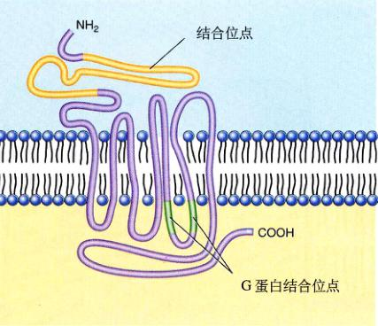
图 7.7 G 蛋白偶联受体是一个 7 次穿透膜的跨膜蛋白
(3) G 蛋白偶联受体的进化起源：当研究显示了 G 蛋白偶联受体的结构后，出现了一个有趣的现象：这种相同的 7 次跨膜的结构被一次又一次地观察到，例如在感觉受体，如脊椎动物眼睛中被光激活的视紫红质蛋白；在由光激活的、对细菌光合作用很重要的视紫红质的质子泵中；在识别酵母母交配因子蛋白的受体里，以及在很多其他感觉受体里都能看到这种结构特征。脊椎动物的视觉红质，确实是利用 G 蛋白的 G 蛋白偶联受体，而细菌视紫红质则不是。两者以及其他黑色 G 蛋白偶联受体，都出现这种七次跨膜的模式，这暗示了这个模式很古老，而且 G 蛋白偶联受体可能是从单细胞祖先的感觉受体演化而来的。
(4) G 蛋白的发现：德克萨斯州西南大学医学中心的 Alfred Gilman 和国家环境健康科学研究所的 Martin Rodbell，因对 G 蛋白的研究工作而于 1994 年获得了诺贝尔医学及生理学奖。事实证明 Rodbell 和 Gilman 的工作具有显著的影响。超过一半的目前仍在使用的药物，其机制都与 G 蛋白有关，G 蛋白的研究将大大地扩展我们对这些药物作用机制的理解。此外，对 G 蛋白的研究可以帮助阐明细胞一般是怎样进行通讯联系的，以及它们怎样为生物体的整个生理活动作贡献。正如 Gilman 所说，G 蛋白“涉及每一件事，从酵母的性别到人类的认知力”。
7.3 追踪信息在细胞内的行程
7.3.1 胞内信号的启动
某些酶受体和大部分 G 蛋白偶联受体，利用其他物质在细胞质内分程传递信息，来把信号分子的信息带入靶细胞，这些“其他物质”是小分子或离子，一般称为第二信使 (second messenger) 或胞内介质 (mediator)，它们与特定的蛋白质结合，改变其性状，从而改变这些蛋白质的行为。两种最为广泛使用的第二信使是环腺苷酸 (cAMP) 和钙离子。
1) cAMP
所有动物细胞都使用 cAMP 作为第二信使（第 56 章将对 cAMP 作详细讨论）。为了了解 cAMP 一般是怎样作为一个信使来工作的，就让我们看看当肾上腺素与被称为 β 肾上腺素受体 (图 7.8) 的一种特定类型 G 蛋白偶联受体结合时，会有什么现象发生。当肾上腺素与这个蛋白结合时，它将激活一个 G 蛋白，然后这个 G 蛋白会激活腺苷酸环化酶 (adenylylcyclase)，从而在细胞内生产大量 cAMP (图 7.9a)。cAMP 与激活酶结合并激活它，活化的激酶将磷酸根加在细胞内特定的蛋白质上。磷酸化作用对细胞功能的影响取决于细胞和被磷酸化的蛋白质本身。举个例子，在肌肉细胞里，激酶磷酸化激活一种酶，这种酶催化糖原分解成葡萄糖，并抑制葡萄糖合成糖原，这样，肌肉细胞更容易得到葡萄糖来进行新陈代谢。
Page 8 / 原始页码 124
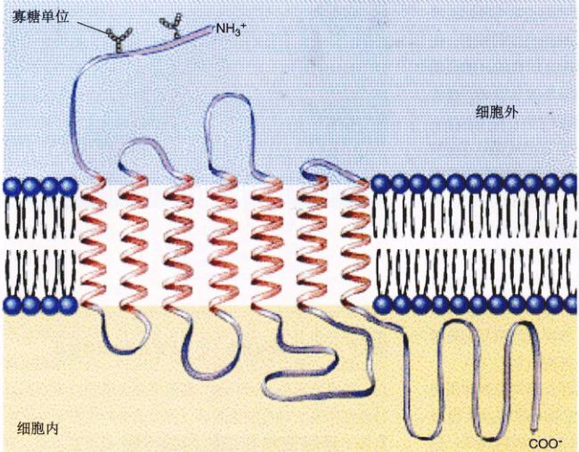
图 7.8 肾上腺素受体的结构 这个受体是一个 G 蛋白偶联分子。当它与细胞外的信号分子结合时，便使细胞内生成大量 cAMP，cAMP 导致细胞的变化。
2) 钙离子
钙离子 (Ca²⁺) 作为第二信使比 cAMP 作用更为广泛。Ca²⁺ 在细胞质里含量一般很低（少于 10⁻⁷ mol/L），而细胞外和内质网内的 Ca²⁺ 含量相当高（约 10⁻³ mol/L）。内质网膜上的化学门控钙离子通道通常是关闭的：当它们打开时，Ca²⁺ 涌入细胞质内，并触发对 Ca²⁺ 敏感的蛋白质来启动各种各样的反应。例如 Ca²⁺ 从内质网里流出来，导致骨骼肌细胞收缩和内分泌细胞分泌激素。
门控 Ca²⁺ 通道由 G 蛋白偶联受体打开。受体对来自其他细胞的信号做出反应，激活它的 G 蛋白，然后由 G 蛋白激活磷脂酶 C (phospholipase C)。这个酶将催化质膜里的磷脂产生肌醇三磷酸 (inostiol triphosphate, IP3)，IP3 分子通过细胞质扩散到内质网，并与 Ca²⁺ 通道结合，从而打开通道，使 Ca²⁺ 从内质网流入细胞质 (图 7.9b)。
Ca²⁺ 通过与钙调蛋白 (calmodulin) 结合来启动细胞的某些反应。钙调蛋白是由 148 个氨基酸组成的胞浆蛋白，含有 4 个 Ca²⁺ 结合位点 (图 7.10)，当 4 个 Ca²⁺ 与钙调蛋白结合后，钙调蛋白 / Ca²⁺ 复合物与其他蛋白质结合并激活它们。
7.3.2 放大信号：蛋白激酶级联反应
酶偶联受体和 G 蛋白偶联受体都在细胞表面接受信号，但正如我们所看到的，靶细胞的反应极少在那里发生。在大多数情况下，信号是通过第二信使传到细胞质或细胞核中，从而影响一个或多个酶或基因的活性，以此改变细胞的行为。但是，大多数的信号分子浓度很低，以至于它们通过扩散到达靶细胞时变得很长，除非这个信号被放大了。因此在信号传向细胞核时，大部分偶联受体和 G 蛋白偶联受体，利用一条由其他蛋白质使组成的链来放大信号。
那么，信号是怎样被放大的呢？想像有一个接力赛跑，在每一段的终点上，完成赛跑任务的每个运动员，把接力棒交给 5 个新的运动员来开始下一段赛程。这样，随着比赛进行，运动员的数量将明显地增加：从 1 到 5、25、125 等。当一个信号通过细胞表面到达细胞质或细胞核时，会发生同样的过程。首先，受体激活了一个处于第一阶段的蛋白质，大多是把它磷酸化。受体或者直接地往蛋白质上加磷酸根，或者激活一个 G 蛋白，由它来活化第二个蛋白质去进行磷酸化作用。一旦被激活，每个这样的第一阶段蛋白质就转而激活大量第二阶段蛋白质；然后，它们每个再激活大量第三阶段的蛋白质，如此下去 (图 7.11)。细胞表面的单个受体因而可以激活一连串的蛋白激酶，从而放大信号。
Page 9 / 原始页码 125
图 7.9 第二信使是怎样工作的 (a) 环腺苷酸 (cAMP) 途径。细胞外受体与信号分子结合，然后通过 G 蛋白激活一个与膜结合的酶——腺苷酸环化酶，这个酶可以催化 cAMP 的合成。cAMP 与靶蛋白结合，从而启动细胞的变化。(b) 钙离子 (Ca²⁺) 途径。细胞外受体与另一个信号分子结合，然后通过另一个 G 蛋白激活磷脂酶 C。这个酶将促使肌醇三磷酸的生成。肌醇三磷酸与内质网膜里的钙离子通道结合，并把它们打开。Ca²⁺ 被释放到细胞质里，从而导致细胞的变化。
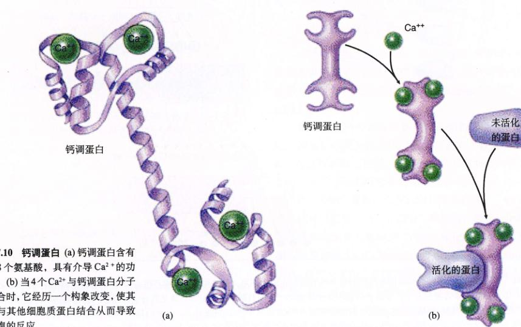
图 7.10 钙调蛋白 (a) 钙调蛋白含有 148 个氨基酸，具有结合 Ca²⁺ 的功能。(b) 当 4 个 Ca²⁺ 与钙调蛋白分子结合时，它经历一个构象改变，使其能与其他细胞蛋白结合从而导致细胞的反应。
Page 10 / 原始页码 126
1) 视觉的级联放大作用
让我们追踪蛋白质的级联放大过程，看看这究竟是怎么运作的。在视觉中，单个光激活的视紫红质（一个 G 蛋白偶联受体），在第一阶段信号传递的过程中，激活了几百个 G 蛋白转导素分子；在第二阶段，每个转导素使一个酶去修饰几千个特殊的胞内信使分子，称为环乌苷酸 (图 7.12)（后面将对环乌苷酸作更详细讨论）。在约 1 秒的时间里，单个视紫红质信号通过这两个步骤级联分裂出 10⁵ (100000) 个环乌苷酸分子 (图 7.13)！这样，人的视杆细胞的敏感度足以使它探测到只有 5 个光子的短暂闪光。
2) 细胞分裂的级联放大作用
从质膜到细胞核的信号放大过程比刚才描述的过程要更复杂，例如细胞分裂是由一个作为蛋白激酶的受体控制的，这个受体通过磷酸化一个称为 ras 的细胞内蛋白质，来对促进生长信号作出反应。然后，ras 激活一系列相互作用的磷酸化级联反应，某些这样的级联过程有 5 个或更多的步骤。如果 ras 蛋白质由于任何原因而变得异常活跃，细胞将会像受到持续的刺激一样不断的分裂。Ras 蛋白质首先是在癌细胞里发现的，编码 ras 蛋白的某个基因发生突变，使它变得异常活跃，从而使细胞无节制地繁殖下去，几乎有三分之一的人类癌症都有这样一个 ras 基因的突变。

图 7.11 信号的放大 在细胞接收信号过程的很多步骤里存在放大作用，最终可以使细胞产生一个巨大的反应。例如一个细胞表面载体：①可激活很多 G 蛋白分子，②每个 G 蛋白分子再激活一个腺苷酸环化酶分子，③这些分子产生极大量的 cAMP，④接着每个 cAMP 分子激活一个蛋白激酶，⑤这些蛋白激酶磷酸化从而激活几个特定的酶分子，⑥然后每一种酶都可以催化很多化学反应，⑦信号分子的起始浓度是 10⁻¹⁰ mol/L，每个细胞表面受体可以触发生成浓度为 10⁻⁶ mol/L 的产物，放大了 4 个数量级。
Page 11 / 原始页码 127
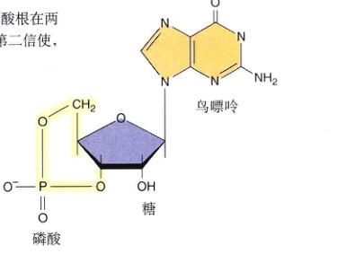
图 7.12 环鸟苷酸 环鸟苷酸是一个鸟嘌呤核苷一磷酸分子。它带有的单一磷酸根在两处与糖残基结合在一起（这个环状部分显示成黄色）。环鸟苷酸是一个重要的第二信使，把它 G 蛋白与细胞质内的信号传导路径连接起来。
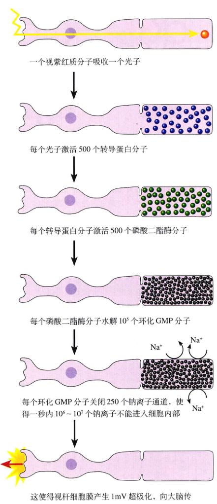
图 7.13 视觉中的信号放大作用 在脊椎动物的视杆细胞里（眼睛中用来辨别明暗的细胞），当单个视紫红质色素分子被一个光子刺激后，最终会产生 100 000 个 cGMP 分子，它们促使视杆细胞膜发生变化。这个变化被生物体认作视觉事件。
7.4 介导细胞间相互作用的细胞表面蛋白
7.4.1 细胞身份表达
除了一些原始类型的生物外，多细胞生命体的特征就是发展出高度专门化的细胞集团，称为组织 (tissue)，例如血液和肌肉。值得注意的是，虽然身体的所有细胞都源于同一个受精的细胞，含有相同的基因信息，但是在同一个组织里的细胞只执行该组织的功能，而不会执行其他功能。细胞是怎样判断自己在哪里呢？又怎样知道自己属于哪个类型的组织呢？
组织特异的身分标记
当动物细胞发育时，每一种细胞都获得了唯一的细胞表面身份，这些分子作为标记，表明细胞的组织特异身份，与它们直接接触的其他细胞会“阅读”上面的标记。
(1) 糖脂：大部分组织特异的细胞表面标记是糖脂，即带有糖类头部的脂。红细胞表面的糖脂是 A、B 和 O 血型差异的原因。当一个组织内的细胞分裂和分化时，细胞表面的糖脂将有着显著的变化。
(2) MHC 蛋白：免疫系统利用其他的细胞表面标记来区分“自我”和“非自我”的细胞。例如一个指定的个体的所有细胞有相同的“自我”标记，称为主要组织相容性复合体 (major histocompatibility complex, MHC) 蛋白。由于几乎每个个体实际上都制造一组不同的 MHC 蛋白，所以它们作为区分每个个体的身体印记。MHC 蛋白和其他自我识别标记，都是固定在质膜内单次跨膜的蛋白质，它们很多都属于一个大的受体超家族——免疫
Page 12 / 原始页码 128

图 7.14 细胞表面标记蛋白——免疫球蛋白家族的结构 T 细胞和 B 细胞的受体通过识别并结合某种标记，来介导生物体的免疫反应。MHC 抗原把细胞标记成“自我的”，使免疫细胞只攻击入侵物，如细菌、病毒甚至移植器官的细胞。
球蛋白 (图 7.14) 的成员。免疫系统的细胞不断地检查它们在身体内遇到的细胞，在遇到带有异种或“非自我”的身份标记时，它们将把细胞毁坏。
第 57 章将详细叙述脊椎动物的免疫系统，它显示出一种独特的区分“自我”与“非自我”的本领。虽然其他的脊椎动物，甚至某些如海绵等低级动物没有一个复杂的免疫系统，但也可以做到某种程度的区分。
7.4.2 细胞间的黏合
在多细胞生物里，细胞间的物理接触不全是短暂的碰触。事实上，大多数细胞一直与在与其他细胞进行物理接触，如组成肺、心脏或肠等组织的细胞。这些细胞以及聚集在它们周围的其他细胞之间，形成了持久性或长期不变的连接，称为细胞连接 (cell junction)（图 7.15）。组织里细胞之间物理连接的性质，很大程度上决定了组织的样子。确实，一个组织本身的能常取于其内部单个细胞的排列。就像没有钉子和水泥的屋子无法维持它的结构一样，没有细胞连接的组织也不能维持它的特征结构。
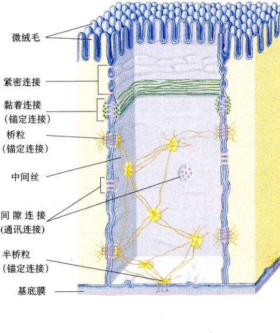
图 7.15 细胞连接类型小结 这里用小肠上皮细胞显示一般细胞连接的结构和位置。
Page 13 / 原始页码 129
细胞通道被称为细胞连接的持久结合来相互黏附。
7.4.3 紧密连接
根据不同的功能，细胞连接分为 3 类（图 7.16）：紧密连接、锚定连接和通讯连接。
紧密连接 (tight junction) 有时也称为封闭连接 (occluding junction)，它把相邻细胞的质膜连接成一片，以防止小分子从细胞间隙穿过（图 7.17）。这种连成一片的质膜仿佛是官里的一堵墙，把分子挡在了一侧或另一侧。
1) 形成细胞层
动物消化道的内皮只有一层细胞，这层细胞的一面朝向消化道的内侧，而另一面朝向细胞外空隙，血管就位于这里。紧密连接环绕了这层的每一个细胞，就像一条皮带系在裤子上。邻近细胞之间的连接很紧密，几乎没有缝隙，因此，从消化道里从食物吸收的营养物，必须通过这层细胞膜才能进入血液。
2) 分隔细胞膜
在消化道面细胞之间的紧密连接，也会把这些细胞的质膜分成独立的区域。面向消化道腔面的运送蛋白，把营养物从这一侧运入细胞质。而位于细胞另一面的膜转运蛋白，则把这些营养物从细胞质送入细胞外液，再进入血液。为使这层细胞很好地吸收营养物，这些蛋白质必须在流动膜中保持正确的位置。紧密连接有效地把位于这层细胞相对两侧膜的蛋白质分开，防止它们从细胞层的一侧漂到另一侧。当采用实验方法破坏了紧密连接后，这种蛋白质的移动就会发生。
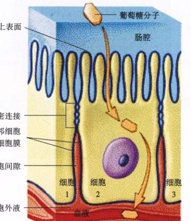
图 7.17 紧密连接 这些细胞间的连接像一条紧绷的带子环绕着细胞，可确保物质是从细胞内通过，而不是从细胞间穿过。
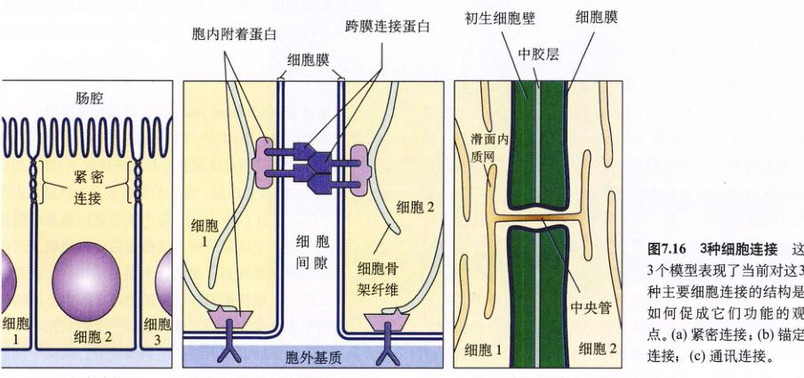
图 7.16 3种细胞连接 这3个模型表现了当前对这3种主要细胞连接的结构是如何促成它们功能及观点的。(a) 紧密连接；(b) 锚定连接；(c) 通讯连接。
Page 14 / 原始页码 130
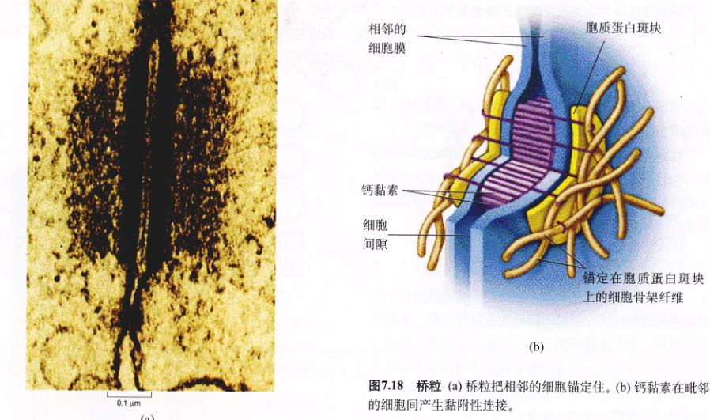
图 7.18 桥粒 (a) 桥粒把相邻的细胞锚定住。(b) 钙黏素在毗邻的细胞间产生黏附性连接。
7.4.4 锚定连接
锚定连接 (anchoring junction) 机械地把一个细胞的细胞骨架和另一个细胞的细胞骨架或细胞外基质粘在一起，它们是诸如肌肉和上皮等承受机械压力的组织内最普遍的连接方式。
1) 钙黏素和中间丝：桥粒
称为桥粒 (desmosome) 的锚定连接把相邻细胞的细胞骨架相连（图 7.18），而半桥粒把上皮细胞固定在基膜上。一种称为钙黏素 (cadherin) 的蛋白质在连接中起了决定性作用，大部分钙黏素蛋白是单次跨膜的蛋白。各种黏合蛋白把钙黏素在细胞质一侧的短端与细胞骨架的中间丝连接在一起，钙黏素分子的另一端从质膜里向外伸出，直接与相邻细胞上突出的钙黏素手握手地牢固连接，从而把细胞粘在一起。
在中间丝上的蛋白质间的连接，比自由漂浮的膜蛋白连接更稳固，蛋白质靠它的非极性部分和膜脂之间相对较弱的相互作用来悬浮在膜内的，可以不费太多力，就可以把一个没有系着的蛋白质完全拉出膜来，就如同把一个没有固定的木筏拉出水那样。
2) 钙黏素和肌动蛋白丝
在钙黏素介导的连接中，钙黏素也可以连接细胞的肌动蛋白架构（图 7.19），它们在细胞间形成比连接中间丝时更弱的连接。不同组织里，以及同一组织在不同的时间里，存在很多种连接肌动蛋白的钙黏素。在脊椎动物的发育期间，胚胎里神经元的迁移与其质膜上的钙黏素类型变化有关，这暗示了基因控制的钙黏素表达变化，可以为迁移细胞提供一个到达目的地的路线图。
3) 整联蛋白介导的连接
黏着连接 (adherens junction) 是锚定连接另一与微丝有关的连接类型，它把细胞的肌动蛋白丝和其他相邻细胞的肌动蛋白丝或细胞外基质连接起来（图 7.20）。这些连接里的连接蛋白是一个大的细胞表面受体超家族成员，称为整联蛋白 (integrin)。每个整联蛋白都是跨膜蛋白，由两个突出于质膜外的不同糖蛋白亚基组成。这两个亚基同时与细胞外基质里的一个蛋白质结合，就像两只手紧紧抱住一根杆子那样。整联蛋白有很多不同的种类（细胞学家分成 20 种），每种都有一个形状稍许不同的手。一个给定的细胞所结合的基质成分，取决于细胞质膜里整联蛋白的组合类型。
Page 15 / 原始页码 131
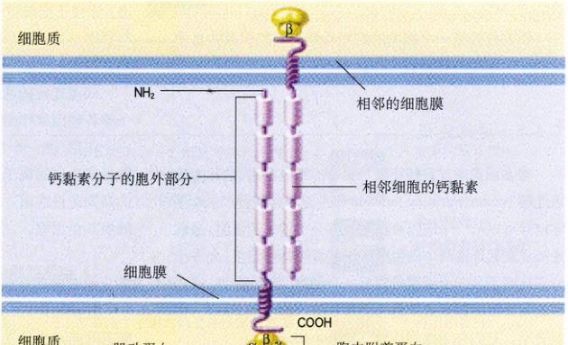
图 7.19 钙黏素介导的连接 钙黏素分子锚定在细胞骨架中的肌动蛋白上，并穿过质膜与毗邻细胞的钙黏素相互作用。
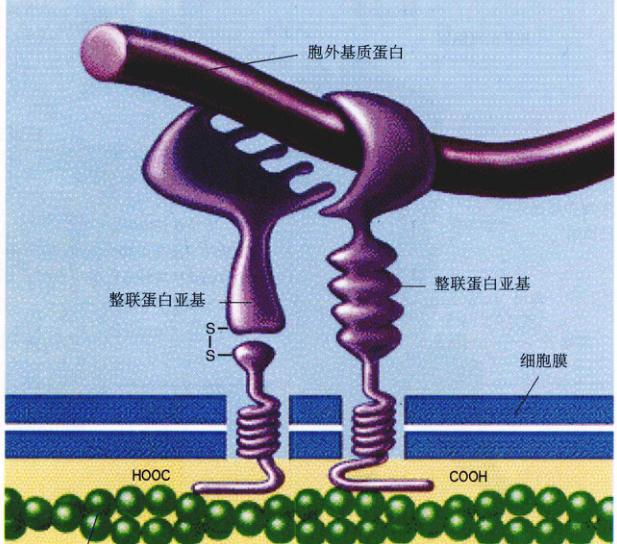
图 7.20 整联蛋白介导的连接 这些黏附连接，把细胞内的肌动蛋白丝与它们邻近细胞的肌动蛋白丝或细胞外基质连在一起。
Page 16 / 原始页码 132
7.4.5 通讯连接
很多细胞通过直接连接与相邻的细胞联系，这称为通讯连接 (communicating junction)。在这种连接里，一个化学信号可以从一个细胞直接传到另一个相邻的细胞。通讯连接建立起连接两个细胞细胞质的直接物理连接，允许小分子或离子从一个细胞传到另一个细胞。在动物中，这种细胞间直接的联系通道称为间隙连接 (gap junction)。在植物里，它们称为胞间连丝 (plasmodesmata)。
1) 动物里的间隙连接
通讯连接中的间隙连接是由称为连接子 (connexon) 的结构组成的。连接子是 6 个相同的跨膜蛋白复合物（图 7.21）。连接子里的蛋白质围成一圈，从而形成一个通过质膜的通道，通道突出质膜几个纳米。当两个细胞的连接子完美地排在一条直线上时，一个间隙连接就形成了，从而产生了一个开放的跨过两个细胞质膜的通道。连接子把成对细胞质膜的间距保持在 4 nm 左右，这与紧密连接中两个细胞的脂双层或多或少地直接接触有明显区别。
间隙连接的通道是动态结构，它包括 Ca²⁺ 和 H⁺ 离子等各种因素作出反应，可开可关。这个门控至少起到一个作用：当一个细胞受损后，它的质膜常常会渗漏，细胞外高浓度的离子，如 Ca²⁺，会流入受损细胞并关闭它的间隙连接通道，这可把细胞隔离分开，从而防止损坏扩散到其他细胞。
2) 植物的胞间连丝
在植物体内，细胞壁把每个细胞和其他细胞分离开。细胞间的连接只发生在细胞壁里的孔或间隙处，相邻的细胞质膜可以在此处相互接触。穿过相接触质膜形成的细胞质连接称为胞间连丝 (图 7.22)。在高级植物里，大多数活细胞通过这种连接方式与周围细胞相连。尽管胞间连丝的结构比动物间隙连接更复杂，但它们的功能很相似。与间隙连接不同的是，胞间连丝沿质膜排列含有一条中央管，把两个细胞的内质网连在一起。
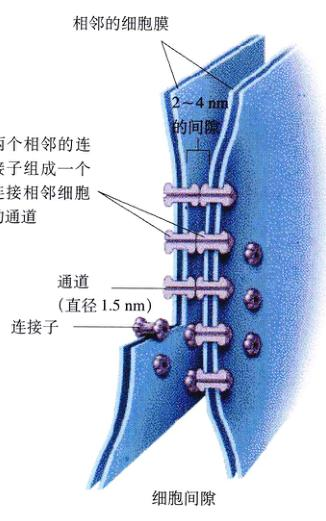
图 7.21 间隙连接 间隙连接里的连接子产生沟通两个邻接细胞的细胞质通道。间隙连接很容易就让快速联系（如心脏的组织）所需的小分子或离子通过，但不允许像蛋白质那样的大分子通过。
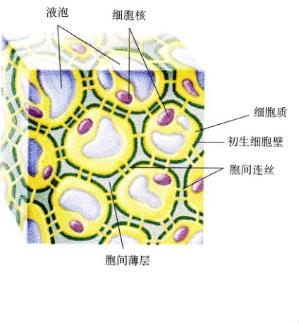
图 7.22 胞间连丝 植物细胞通过细胞壁里专门的开口来联系，称为胞间连丝。毗邻细胞的细胞质在此处连在一起 (图 7.16c)。
Page 17 / 原始页码 133
小 结
7.1 细胞利用化学物质相互传递信号
7.2 细胞内和细胞表面的蛋白质接收从其他细胞发来的信号
- 信号分子通常与细胞内的受体结合，诱导特定区段 DNA 的转转录，最终产生有一定功能的蛋白质。
- 细胞外液中的信号分子与细胞表面的受体特异性结合。这种结合通常导致胞内蛋白质的磷酸化。
- G 蛋白好像细胞内的运输器，从活化的受体运动到细胞膜的其他区域。
7.3 追踪信息在细胞内的行程
- 从信号分子与细胞表面受体结合到细胞作出应答，这之间有一系列的信号放大步骤。这些步骤通常与蛋白质在激酶作用下的磷酸化有关。
7.4 介导细胞间相互作用的细胞表面蛋白
- 细胞表面存在许多标志该细胞属于特定组织的糖脂。细胞表面的 MHC 蛋白是细胞是否为机体识别的标志。
- 紧密连接和桥粒将细胞连接为一个紧密的整体，使得物质不能轻易穿过。
- 间隙连接（动物中）和胞间连丝（植物中）使得小分子物质能够通过细胞间特殊通道。
问 题
- 什么决定了一个细胞对外界环境中有特定信号分子的反应性？
- 旁分泌、内分泌和突触信号有何异同？
- 请举两个细胞内部受体控制细胞活动的例子。
- 化学门控离子通道的结构特点如何？这与它的功能有何关系？
- 什么是 G 蛋白？它在 G 蛋白偶联受体介导的细胞应答中有何功能？
- 一个信号分子结合细胞表面的受体后，在靶细胞内将引起怎样放大的作用？
- 紧密连接有什么功能？桥粒和黏着连接又有什么功能？什么蛋白质在这些连接中起着重要的作用？
- 间隙连接由什么分子组成？什么样的物质能够穿过间隙连接？
- 什么是胞间连丝？它由什么细胞成分组成？
媒体资源
- 细胞的相互作用
- 学生研究：神经细胞间的传递
- 科学家视角：G 蛋白
- 探索：细胞间的相互作用
- 技能测验：动物细胞的连接方式
- 胞间连丝